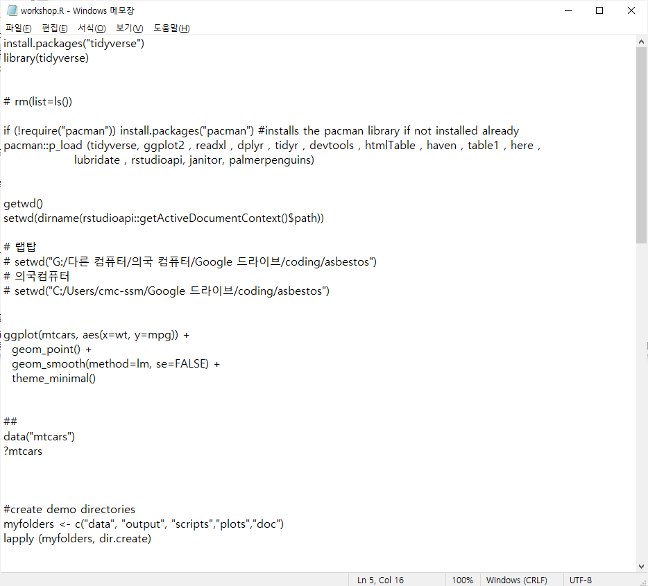
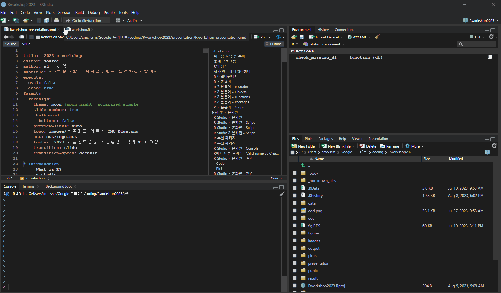
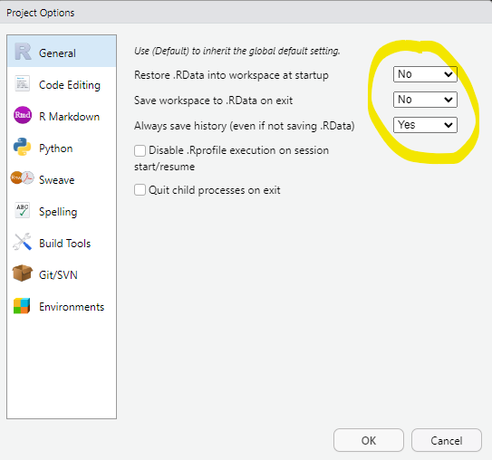
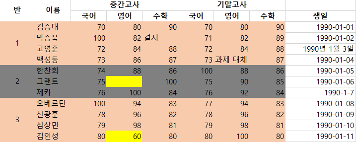
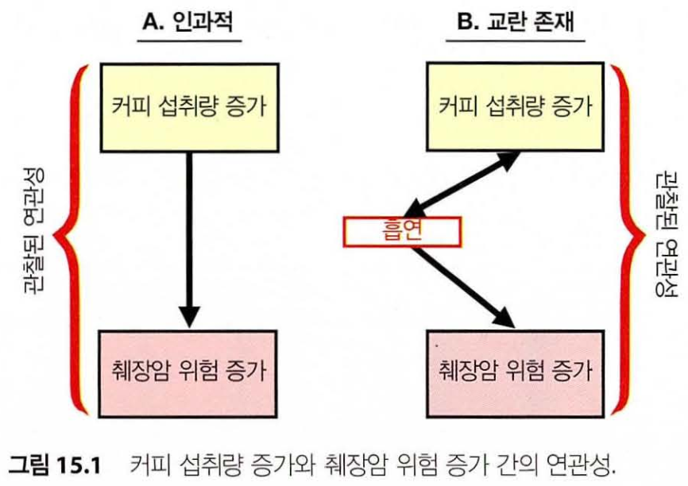
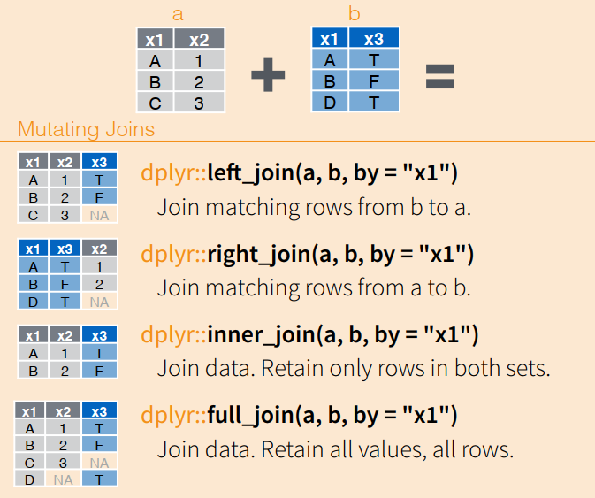
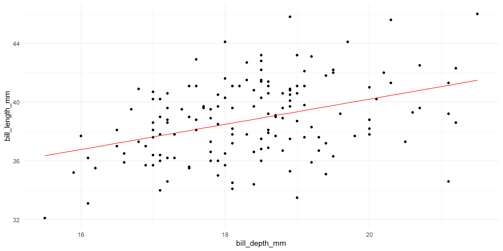
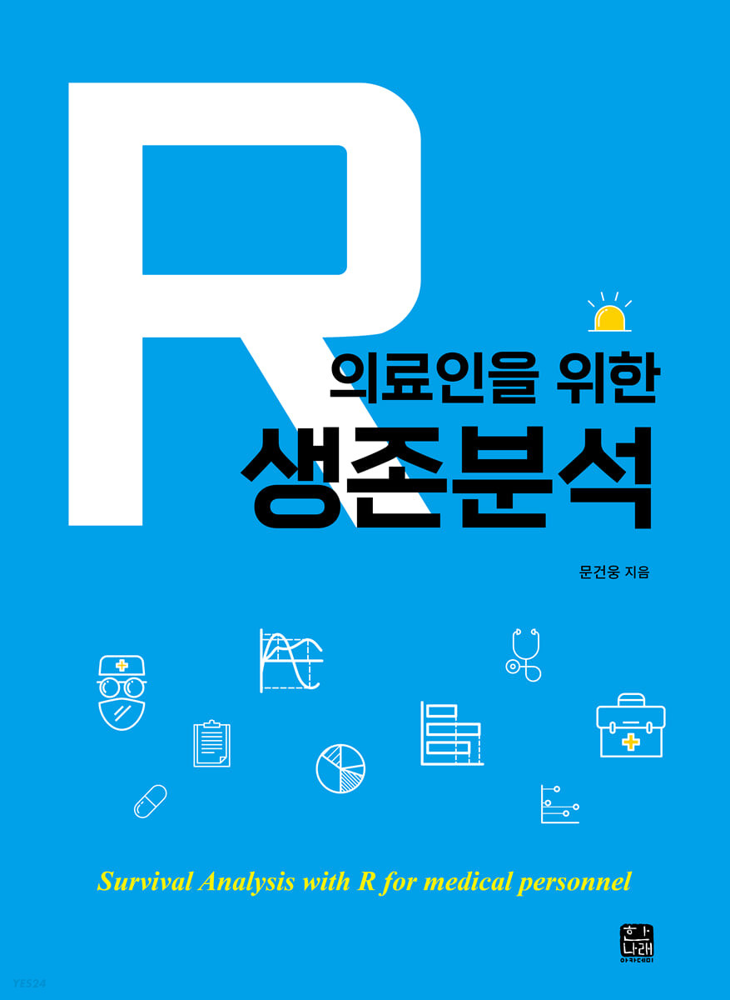

2023 R workshop
가톨릭대학교 서울성모병원 직업환경의학과
Introduction
- What is R?
- R studio
- R : Object
- R : Functions
- R : Packages
- R : Scripts
워크샵 시작 전 준비
- R 설치
- R studio 설치
- R 워크샵 자료 다운 받기
- 압축 파일 다운 후 원하는 곳에 풀기(전체 다운로드!)
- 슬라이드 : presentation > Rworkshop_presentation.html
- 코드 : scripts > workshop.R
- 교과서(참고용) : _book > index.html
- R_workshop.Rproj 더블클릭
통계 프로그램
- Excel(?)
- SAS
- Stata
- R
R의 장점
- 무료
- Reproducibility
- 클릭질 대신 코드를 통해 재현성 확보
- (확장성) 빠른 최신 통계 기법 업데이트
- 커뮤니티
- 범용성
- 통계 이외에 사무 자동화에도 이용 가능
AI가 있는데 배워야하나
- AI가 코드를 다 짜준다?
- 거짓말도 잘 하는 친구
- 단순 작업보다 통계의 개념 및 올바른 해석이 더 중요한 시대

R 어렵다던데?
- R Studio가 없던 시절
- (2011.02.28 탄생)
- tidyverse가 없던 시절
- (2016.09.15. tidyverse 1.0.0 release)
- 싸이 강남스타일(2012.07.)
- 다 옛날 이야기..

R 기본용어
RStudio
Objects
Functions
Packages
Scripts
R 기본용어 - R Studio
RStudio : 편집기
- 통합개발환경(IDE)
- R이랑 함께 깔자
Objects
Functions
Packages
Scripts

R 기본용어 - Objects
RStudio : 편집기
Objects : 데이터
- 데이터, 변수, 그래프 등등
- RDS 파일로 저장할 수 있음(파일 확장자가 .RDS)
Functions
Packages
Scripts
R 기본용어 - Functions
RStudio : 편집기
Objects : 데이터
Functions : 요술항아리
- Object를 넣으면, Object가 나옴.
- 내부에서 무슨 일이 일어나는지 정확히 몰라도 됨. 입력 + 출력만 알자.
- R에서 배우는 명령어들이 다 Function임.
Packages
Scripts
R 기본용어 - Packages
RStudio : 편집기
Objects : 데이터
Functions : 요술항아리
Packages : Function 모음집
- R 기능의 핵심.
- 원하는 통계 기법, 기능이 이미 패키지로 만들어져 어딘가에 있다.
Scripts

Image from: here
R 기본용어 - Scripts
RStudio : 편집기
Objects : 데이터
Functions : 요술항아리
Packages : Function 모음집
Scripts : 코드
- .R 파일

실행 및 기본화면
- R studio : Script pane
- R studio : Console pane
- R studio : Plots/pakages/help pane
- R studio : Environment pane
R Studio 기본화면
R Studio 기본화면 - Script
- File -> New File -> R Script
- Ctrl + Shift + N
- File -> Open File -> workshop.R 열기
- Ctrl + O
R Studio 기본화면 - Script
코드 작성 및 실행(Ctrl + Enter)하는 곳
- 패키지 설치 및 불러오기
R Studio 기본화면 - Script
코드 작성 및 실행(Ctrl + Enter)하는 곳
패키지 설치 및 불러오기
pacman 쓰기
R 추천 패키지
- pacman : 패키지 관리
- tidyverse : 메타 패키지
- dplyr # data management
- tidyr # data management
- ggplot2 # data visualization
- stringr # work with strings and characters
- forcats # work with factors
- lubridate # work with dates
- purrr # iteration and working with lists
R 추천 패키지
파일 읽기 쓰기
- here : R project 폴더에서 상대경로 지정해줌
- rio : csv, xlsx, sas 등등 파일 읽어줌
janitor : 테이블 및 데이터 클리닝
보고서 작성용
- rmarkdown : 리포트 작성
- knitr : R Markdown report generation and html tables
Interactive
- leaflet : # interactive map
- plotly : # interactive graphics
- shiny : # interactive web apps
R Studio 기본화면 - Console
- Ctrl + Enter
- 코드가 콘솔창으로 이동&실행
- 콘솔창에 직접 입력해도 됨.
- 평균 등 간단한 결과는 여기에 바로 표시됨
- Alt + -
- <- : Object에 이름을 붙여줌.
R에서 이름 붙이기 - Valid name vs Clean name
- 대소문자 구별
- 공백 안됨
- 길이는 약 250자 제한이 있다(10000 바이트)
- (추천) janitor::make_clean_names 를 쓰자.
make.names('number 1 to 10') #Valid name
janitor::make_clean_names('number 1 to 10') #Clean name
## Read help and run examples
?janitor::make_clean_names
x <- structure(1:3, names = c("name with space", "TwoWords", "total $ (2009)"))
x
names(x) <- make_clean_names(names(x))
x
make.names('오늘 워크샵을 주관하는 과는')
오늘.워크샵을.주관하는.과는 <- '직업환경의학과'
janitor::make_clean_names('오늘 워크샵을 주관하는 과는')
oneul_wokeusyab_eul_jugwanhaneun_gwaneun <- '직업환경의학과'R Studio 기본화면 - 결과
- 그래프, table1 등 표시되는 곳

R Studio 기본화면 - 환경
R Studio 기본화면(복습)
R Studio - layout 변경!
작업 디렉토리
- 현재 작업 중인 디렉토리
- 데이터 읽어오는 곳
- 결과물 저장하는 곳
- Session -> Set Working directory -> To source File location
- (추천) R project를 쓰자
작업 디렉토리(실습)
R project 만들기
File -> New project
디렉토리를 하나 선택해주면 .Rproj 파일이 생김
.Rproj 파일이 있는 곳이 작업디렉토리
Tools -> Project options 조정(우측 그림)

R project 왜 쓰나? - 코드 위생!
- R project 좋은 점
- Portablity 폴더 단위로 프로젝트 관리
- Reproducibility 소스 코드에서 모든 것이 나오도록 관리
- 다른 사람이 다른 기계에서 미래에도 돌릴 수 있게
- git 등 버전 관리 툴 이용 가능
Why R project? 참고
코드 위생을 위한 좋은 습관
- 데이터, 결과는 모두 프로젝트 폴더 아래에 관리.
- 작업 시작할 때는 R을 새로 시작해줌
- Ctrl + Shift + F10 : R 새로 시작 단축키
- Script에 코멘트 잘 달기
- 스타일 가이드 에 따른 코드 작성
Data Management
- Introduction
- Tidy data?
- 데이터 위생
Data Management
- Data 읽고 쓰기
- Data 클리닝

Data Management
- Data 읽고 쓰기
- Data 클리닝
- 변수명 정리 및 변경
- 중복 제거
- 변수명 추가 생성 및 변형
- 행 추출 혹은 추가

깔끔한 데이터(tidy data)
- Each variable is a column; each column is a variable.
- Each observation is a row; each row is an observation.
- Each value is a cell; each cell is a single value.

Read more here
깔끔한 데이터(tidy data)
- 열 = 변수
- 행 = 관찰(observation)
- 대개는 사람이지만 아닐 수 있다
- 셀 = value
Read more here
깔끔한 데이터(tidy data) - 예시
- 열 = 변수
- 행 = 관찰(observation)
- 대개는 사람이지만 아닐 수 있다
- 셀 = value
| country | year | cases | population |
|---|---|---|---|
| Afghanistan | 1999 | 745 | 19987071 |
| Afghanistan | 2000 | 2666 | 20595360 |
| Brazil | 1999 | 37737 | 172006362 |
| Brazil | 2000 | 80488 | 174504898 |
| China | 1999 | 212258 | 1272915272 |
| China | 2000 | 213766 | 1280428583 |
Read more here
깔끔한 데이터(tidy data) - 아닌 것 예시
- 열 = 변수 FAIL
- 행 = 관찰(observation)
- 셀 = value
| country | cases_1999 | cases_2000 | population_1999 | population_2000 |
|---|---|---|---|---|
| Afghanistan | 745 | 2666 | 19987071 | 20595360 |
| Brazil | 37737 | 80488 | 172006362 | 174504898 |
| China | 212258 | 213766 | 1272915272 | 1280428583 |
Read more here
깔끔한 데이터(tidy data) - 아닌 것 예시
- 열 = 변수
- 행 = 관찰(observation) FAIL
- 셀 = value
| country | year | type | count |
|---|---|---|---|
| Afghanistan | 1999 | cases | 745 |
| Afghanistan | 1999 | population | 19987071 |
| Afghanistan | 2000 | cases | 2666 |
| Afghanistan | 2000 | population | 20595360 |
| Brazil | 1999 | cases | 37737 |
| Brazil | 1999 | population | 172006362 |
| Brazil | 2000 | cases | 80488 |
| Brazil | 2000 | population | 174504898 |
| China | 1999 | cases | 212258 |
| China | 1999 | population | 1272915272 |
| China | 2000 | cases | 213766 |
| China | 2000 | population | 1280428583 |
Read more here
깔끔한 데이터(tidy data) - 아닌 것 예시
- 열 = 변수
- 행 = 관찰(observation)
- 셀 = value FAIL
| country | year | rate |
|---|---|---|
| Afghanistan | 1999 | 745/19987071 |
| Afghanistan | 2000 | 2666/20595360 |
| Brazil | 1999 | 37737/172006362 |
| Brazil | 2000 | 80488/174504898 |
| China | 1999 | 212258/1272915272 |
| China | 2000 | 213766/1280428583 |
Read more here
데이터 위생을 위한 좋은 습관
- 엑셀을 쓰지 않는다
- merged cell
- 셀 서식 문제
- 너무 자유로운 형식
- 엑셀을 포기할 수 없다면..
- 사람이 쉽게 읽을 수 있는 자료 vs 컴퓨터가 쉽게 처리할 수 있는 자료

DATA 생성 및 저장
- Create Data
- Save & Load Data
DATA 생성 및 저장
- 수동으로 만드는 방법 - row
Read more here
DATA 생성 및 저장
- 수동으로 만드는 방법 - column
- 두 데이터가 동일한 지 확인하기
DATA 생성 및 저장
- 생성한 데이터 kidney_stone_treatment 를 csv 포맷으로 저장
- Ctrl + Shift + m
- The pipe operator %>%
- 읽기 쉬운 코드
DATA 생성 및 저장
- 잠깐! data는 data 폴더에서 관리하라고 했는데
- here 패키지를 쓰자.
csv 파일 읽기
- csv = comma-separated values
- 텍스트 파일인데 comma로 자료를 나눠둔 것
- 구조가 간단해서 여기저기서 쓸 수 있는 장점
- 한글 사용자에게는 인코딩 문제를 일으킬 수 있음
- 메모장으로 열어보자.
- 우클릭 - 연결프로그램 - 메모장 선택
- “글자”와 숫자
- csv 파일 불러오기
RDS 파일 저장 및 읽기
- RDS 파일: R 전용 포맷
- R object를 1개 저장
- csv 보다 빠르고 효율적
# data 폴더에 RDS 파일로 저장하기
kidney_stone_treatment %>% saveRDS(here('data', 'kidney_stone_treatment.RDS'))
# data 폴더에 있는 RDS 파일 읽어오기
kidney_stone_treatment_RDS <- readRDS(here('data', 'kidney_stone_treatment.RDS'))
# data frame 보기
kidney_stone_treatment_RDS %>% view
# Are they same?
all.equal(kidney_stone_treatment,kidney_stone_treatment_RDS)좀더 편한 데이터 읽기 쓰기
- 다양한 데이터 파일 포맷들
- csv, RDS 외에도
- 엑셀 : xlsx, xls
- SAS 파일 : sas7bdat
- (추천) rio 로 해결
- A Swiss-Army Knife for Data I/O
# rio 패키지 설치 후 한번 실행해줘야 함.
rio::install_formats()
# export
kidney_stone_treatment %>% export(here('data', 'kidney_stone_treatment.RDS'))
kidney_stone_treatment %>% export(here('data', 'kidney_stone_treatment.csv'))
#import RDS and comparison
kidney_stone_treatment_RDS <- import(here('data', 'kidney_stone_treatment.RDS'))
all.equal(kidney_stone_treatment,kidney_stone_treatment_RDS)
#import csv and comparison
kidney_stone_treatment_csv_rio <- import(here('data', 'kidney_stone_treatment.csv'))
all.equal(kidney_stone_treatment,kidney_stone_treatment_csv_rio)Read more on Top 5 tips for efficient data I/O
DATA 살펴보기
- Data summary
- R markdown 맛보기
데이터 살펴보기 - 펭귄
- 남극 펭귄의 종, 성별, 부리길이, 부리두께, 날개 길이, 체중 자료

데이터 살펴보기 - 펭귄 - summary
- str : 데이터의 크기, 변수형 등을 알려줌.
- head : 첫 6행 보기
- view : 엑셀처럼 보여줌.
- summary : 데이터 요약
데이터 살펴보기 - 펭귄 - histogram
- histogram 그리기
- R base vs ggplot : ggplot
# R base
penguins$bill_length_mm %>% hist()
# R ggplot
penguins %>% ggplot(aes(x=bill_length_mm)) + geom_histogram() + theme_minimal()
# fill by species
penguins %>% ggplot(aes(x=bill_length_mm,fill=species)) + geom_histogram() + theme_minimal()
# facet_grid by species
penguins %>% ggplot(aes(x=bill_length_mm,fill=species)) + geom_histogram() + facet_grid(species~.) + theme_minimal()
# facet_grid by species, island
penguins %>% ggplot(aes(x=bill_length_mm,fill=species)) + geom_histogram() + facet_grid(species~island) + theme_minimal()
# facet_wrap by species, island
penguins %>% ggplot(aes(x=bill_length_mm,fill=species)) + geom_histogram() + facet_wrap(vars(species,island)) + theme_minimal()데이터 살펴보기 - 펭귄 - esquisse
- Don’t panic!
- 패키지 esquisse를 이용해서 쉽게 ggplot 그래프 그릴 수 있음.
데이터 살펴보기 - 펭귄 - skim
- skimr 패키지
- rmarkdown 문서로 만들면 더 예쁨!
R markdown 실습
- File -> New File -> R Markdown
- R markdown 문서 구성
- YAML Header
- Code chunk : Ctrl + Alt + I
- R markdown text
R markdown 실습
---
title: "Untitled"
author: "Jaeyoung Park"
date: "`r Sys.Date()`"
output: html_document
---
# r setup code chunk에 넣기
library(tidyverse)
library(palmerpenguins)
# Code chunk에 입력하기
# ```{r penguins}
# skimr::skim(iris)
# ```
#
# ```{r penguins_species}
# skimr::skim(penguins %>% group_by(species))
# ```DATA 조작
- Operators
- filter, select, arrange, count, mutate, group_by
자주 쓰는 연산자(operator) - 복습
- <- : “assign operator”,
- “save as”
- “..는”
- Alt + -
- %>% : “pipe operator”
- “and then”
- “..를 가지고 뒤에꺼 해”
- Ctrl + Shift + M
DATA 기본 조작
- rename : 변수명 바꾸기
- filter : 행선택
- select : 열선택
- arrange : 순서 정렬
- count : 변수별 개수 세기
- mutate : 새 변수 정의
- group_by + summarise : 그룹별로 요약
- str_* : 텍스트 관련 조작
rename
# 변수명 확인
penguins %>% names()
penguins %>% colnames()
## 한글화 - 추천하지 않으나 예시로 바꿔봄.
penguins %>%
rename('종' = 'species',
'섬' = 'island')
## R base : 원본이 바뀜 주의!
names(penguins)[names(penguins) == "species"] ="종"
## janitor 이용 변수명 변경
penguins <- penguins %>% clean_names()
## 원래대로 바꿔 줌.
names(penguins)[names(penguins) == "jong"] ="species"filter 1
- == : 동일한지 테스트
- is.na : 결측치인지 확인
- ! : Negation operator 참 거짓을 반대로 바꿔줌
- != : 동일하지 않은 거
# 변수명 확인
penguins %>% names()
# species 중에서 Adelie 펭귄만 선택
penguins %>%
filter(species == 'Adelie')
penguins[penguins$species == 'Adelie',] # R base
# sex가 결측치인 것만 선택
penguins %>% filter(sex %>% is.na)
penguins %>% filter(is.na(sex))
# sex가 결측치가 아닌 것만 선택
penguins %>% filter(!is.na(sex))
# species 중에서 Adelie 펭귄이 아닌 것만 선택
penguins %>% filter(species != 'Adelie')filter 2
- | : or
- %in% : in
- & : and
# species 중에서 Adelie 펭귄 또는 gentoo 선택
penguins %>%
filter(species == 'Adelie'|
species == 'Gentoo')
penguins %>%
filter(species %in% c('Adelie','Gentoo'))
# species 중에서 Adelie 펭귄 또는 gentoo 선택
# + island 는 Dream
penguins %>%
filter( (species %in% c('Adelie','Gentoo')) &
island == 'Dream')
# filter를 여러 번 해도 됨
penguins %>%
filter(species %in% c('Adelie','Gentoo')) %>%
filter(island == 'Dream') filter 3
- < : <
- <= : less than or equal to
- complete.cases(.) : 결측치가 없는 거 고르기
# species 중에서 Adelie 펭귄 또는 gentoo 선택 + bill_length_mm 39.2 이하
penguins %>%
filter(species %in% c('Adelie','Gentoo')) %>%
filter(bill_length_mm <= 39.2) # 결측치는 자동 탈락
# bill_length_mm, bill_depth_mm에 결측치가 없는 자료 선택
penguins %>%
filter(complete.cases(bill_length_mm, bill_depth_mm))
# 모든 변수가 결측치가 없는 자료 선택
penguins %>%
filter(complete.cases(.)) filter 실습 문제
문제 : 어느 변수든 결측치가 하나라도 있는 자료를 선택해서 view
자료가 많으면 결측치 없는 자료만 가지고 분석해도 되지만, 추정해서 채워넣어야할 때가 있다.
select
- 변수를 선택
- 제거도 가능
- 숫자를 이용해도 됨.
arrange
- 정렬
- desc : 내림차순 정렬
count
- 변수 내용물 종류가 몇개인지 세기
mutate 1
새 변수 정의하기
data를 조작한 후 assign하기
# TB data 정의
tidy_tb_example <- data.frame(
country = c(rep('Afghanistan',2),rep('Brazil',2),rep('China',2)),
year = c(rep(c(1999,2000),3)),
cases = c(745,2666,37737,80488,212258,213766),
population = c(19987071, 20595360,172006362,174504898,1272915272, 1280428583)
)
# rate 정의
tidy_tb_example %>%
mutate(rate = cases / population * 10000)
# rate 없음 확인
tidy_tb_example
# 집어 넣어줘야 됨
tidy_tb_example <- tidy_tb_example %>%
mutate(rate = cases / population * 10000)
# R base
tidy_tb_example$rate <- tidy_tb_example$cases / tidy_tb_example$population * 10000mutate 2
- 새 변수를 정의
- 반올림할 때 주의하기 : round vs janitor::round_half_up
mutate 3
- 조건문 ifelse으로 변수 정의하기 : 엑셀이랑 비슷!
- 변수를 숫자형으로 바꾸기 : 최첨단 통계 패키지들을 쓰려면 이런 작업이 필요할 때가 있음.
- (추천) case_when
# male = 1 female =0으로 새 변수 생성
penguins %>% mutate(sex_numeric = ifelse(sex == 'male', 1, 0))
# 정의가 잘 되었는지 확인해보기
penguins %>%
mutate(sex_numeric = ifelse(sex == 'male', 1, 0)) %>%
count(sex, sex_numeric)
# case_when으로 같은 작업
penguins %>%
mutate(sex_numeric = case_when(sex == 'male' ~ 1,
sex == 'female' ~ 0))mutate 4
- 연속형 변수를 이분형 변수로 변환
- flipper_length_mm
# 데이터 확인 : 둘로 나누고 싶어짐
penguins$flipper_length_mm %>% hist
penguins$flipper_length_mm %>% summary
# 중앙값을 기준으로 long, short 정의
penguins %>%
mutate(flipper =
case_when(flipper_length_mm < median(flipper_length_mm, na.rm= TRUE) ~ 'short',
flipper_length_mm >= median(flipper_length_mm, na.rm= TRUE) ~ 'long',
TRUE ~ NA))group_by & summarize
- 그룹화 & 요약
- 그룹화한 변수의 내용물 별로 반복작업을 해주는 거
- (습관) group_by 로 할 일 다한 후 ungroup() 해주자.
# group_by 만 하면 # Groups: species [3] 만 생기고 별일 없음.
penguins %>%
group_by(species)
# 그룹별로 flipper 평균, 최대, 최소 값을 요약
penguins %>%
group_by(species) %>%
summarise(
n_cases = n(),
mean_flipper = mean(flipper_length_mm, na.rm = TRUE),
max_flipper = max(flipper_length_mm, na.rm = TRUE),
min_flipper = min(flipper_length_mm, na.rm = TRUE),
n_males = sum(sex == "male", na.rm = TRUE))group_by & mutate
- 그룹화 & 새 변수 정의
# 중앙값을 기준으로 species 별로 long, short 정의
penguins_flipper_classified <-
penguins %>%
group_by(species) %>%
mutate(flipper_by_species =
case_when(flipper_length_mm < median(flipper_length_mm, na.rm= TRUE) ~ 'short',
flipper_length_mm >= median(flipper_length_mm, na.rm= TRUE) ~ 'long',
TRUE ~ NA)) %>%
ungroup() #잊지마세요
# 잘 정의되었는지 확인하기
penguins_flipper_classified %>% count(species, flipper_by_species)
penguins %>% filter(species =='Adelie', flipper_length_mm == 190) %>% nrow
# view에서 찾기 + 정렬 기능 이용해서 확인하기
penguins_flipper_classified %>% viewDATA 조작 복습
# A와 B의 합계를 구한다.
kidney_stone_treatment_total <- # 새로 만드는 데이터 이름 정해줌
kidney_stone_treatment %>%
group_by(treatment) %>% # 치료법 별로
summarise(cases=sum(cases), success = sum(success)) %>% # cases, success 요약 한다
mutate(stone_size ='both') # stone_size는 both. 원래 자료에 붙이려면 변수 개수를 맞춰준다.
kidney_stone_treatment %>%
bind_rows(kidney_stone_treatment_total) %>% # 합체
mutate(rate = format(round(success/cases*100,1), digits= 1,nsmall=1))%>% # 성공률을 구해줌
select(treatment, stone_size, rate) %>% # 변수 선택
pivot_wider(names_from = 'treatment', values_from = 'rate') # wide form으로 변경! 나중에 자세히 | stone_size | A | B |
|---|---|---|
| small | 93.1 | 86.7 |
| large | 73.0 | 68.8 |
| both | 78.0 | 82.6 |
- A와 B 중 더 효과적인(=성공률이 높은) 치료법은?
- Simpson’s paradox
Read more on Simpson’s paradox
교란변수 ?
- X : 치료법, 노출 등등
- 커피 섭취량
- Y : outcome, 성공률, 생존률 등등
- 췌장암
- C : 교란 변수
- C는 Y의 알려진 위험요인
- C는 X와 연관성이 있으나, X의 결과는 아니다.
- 흡연
- 연령, 성별 등등..

교란변수 통제
- 연구 설계와 수행 단계
- randomization
- restriction
- matching
- 분석 단계
- 층화 : stratification
- 보정 : multivariate analysis
숨어있는 변수 조심!
DATA 고급 조작
- De-duplication
- NA imputation
- Join
- Pivot
중복제거
- 반복되는 행이 있는지 확인
- nrow : 행의 개수를 세어서 체크
중복제거 : 언제?
- 보통 Id를 unique 하게 만들어서 인구학적 변수를 붙여준다.
# Example df
my_handmade_df <- data.frame( Id = c('A','A','A','B','B','B','C','C','D','D'),
ALT = c(13,22,27,15,40,NA,23,21,75,23),
AST = c(23,32,23,18,53,23,44,33,80,44),
date = c('2019-01-23','2020-01-10','2021-01-22','2020-03-03','2021-03-15','2022-03-31','2021-10-14','2022-04-30','2021-08-17','2022-08-16'))
# Date 자료형 변환
my_handmade_df %>% str
my_handmade_df$date <- as.Date(my_handmade_df$date)
my_handmade_df %>% str
# distinct vs R base vs 벡터
my_handmade_df %>% distinct(Id)
my_handmade_df[!duplicated(my_handmade_df$Id), ]
unique(my_handmade_df$Id)중복제거 : 언제?
- 인구학적 정보 data와 반복측정 자료의 분리
- 오류 예방
- slice_min : baseline 측정치 추출하기
# 인구학적 정보 추가
my_handmade_df_demographic <- my_handmade_df %>% distinct(Id) %>%
mutate(sex = c('M','F','M','F'))
# 인구학적 정보를 분리하지 않았을 때 발생할 수 있는 오류 예
my_handmade_df_wrong <- my_handmade_df %>%
mutate(sex = c(rep('M',3),rep('F',2),rep('M',3),rep('F',2)))
# 성별 입력 오류 찾기
my_handmade_df_wrong %>% group_by(Id) %>% summarise(n = n_distinct(sex))
# 첫번째 측정만 추출
my_handmade_df_baseline <-
my_handmade_df %>% group_by(Id) %>% slice_min(date)결측치
- 결측치? 예방이 최선
- 결측치 종류
- MCAR(missing completely at random)
- 연구대상 및 변수값과 무관한 결측(전산 오류 등). 드물다.
- MAR(missing at random)
- 결측이 되는 정도가 결측된 변수의 값이 아니라 다른 변수와 관련
- MNAR(missing not at random)
- 결측이 되는 정도가 결측된 변수의 값에 따라 달라짐
- MCAR(missing completely at random)
결측치 종류 예시
- 결측치 종류 예시
- 서울성모병원에 방문해서 설문지 작성 후 혈압을 측정하는 연구
- MCAR(missing completely at random)
- 차가 막혀서 못 왔어요
- MAR(missing at random)
- 직장있는 사람들이 못 왔어요.
- MNAR(missing not at random)
- 집에서 혈압을 재보고 있는데 혈압이 정상이어서 안 왔어요.
- MAR vs MNAR : 구별 어려움.
결측치 처리 방법
| Missing data mechanism | Analysis | Imputation |
|---|---|---|
| MCAR | Complete case analysis | No imputation necessary |
| MAR | No complete case analysis | Single imputation methods not valid, Multiple imputation needed |
| MNAR | No complete case analysis | All imputation methods not valid |
결측치 처리 방법
결측치 버리고 분석
결측치를 대체
- 평균이나 중앙값, 최빈값 등으로 대체
- 분포가 변할 수 있어 주의 필요. 비추
- MICE(Multivariate Imputation by Chained Equation) Imputation
- MAR에는 이 방법을 써보자.
- mice 패키지 이용
- 평균이나 중앙값, 최빈값 등으로 대체
결측치 처리 예시
- 펭귄 데이터로 결측치 대체 실습
## NA imputation 실습 : 펭귄에 id 추가
penguins_NA <- penguins %>%
mutate(id = 1: nrow(penguins)) %>%
relocate(id) # id 변수를 맨 앞으로
## 결측치 있는 id 추출
id_with_NA <- penguins_NA %>% filter(!complete.cases(.)) %>% pull(id)
## 결측치 있는 부분
penguins_NA %>% filter(!complete.cases(.))# A tibble: 11 × 9
id species island bill_length_mm bill_depth_mm flipper_length_mm
<int> <fct> <fct> <dbl> <dbl> <int>
1 4 Adelie Torgersen NA NA NA
2 9 Adelie Torgersen 34.1 18.1 193
3 10 Adelie Torgersen 42 20.2 190
4 11 Adelie Torgersen 37.8 17.1 186
5 12 Adelie Torgersen 37.8 17.3 180
6 48 Adelie Dream 37.5 18.9 179
7 179 Gentoo Biscoe 44.5 14.3 216
8 219 Gentoo Biscoe 46.2 14.4 214
9 257 Gentoo Biscoe 47.3 13.8 216
10 269 Gentoo Biscoe 44.5 15.7 217
11 272 Gentoo Biscoe NA NA NA
# ℹ 3 more variables: body_mass_g <int>, sex <fct>, year <int>결측치 처리 예시
- 펭귄 데이터로 결측치 대체 실습
# median 으로 대체
penguins_NA_imputed1 <- penguins_NA %>%
mutate(bill_length_mm =
replace(bill_length_mm, is.na(bill_length_mm), median(bill_length_mm, na.rm = TRUE)))
penguins_NA_imputed1 %>% filter( id %in% id_with_NA)# A tibble: 11 × 9
id species island bill_length_mm bill_depth_mm flipper_length_mm
<int> <fct> <fct> <dbl> <dbl> <int>
1 4 Adelie Torgersen 44.4 NA NA
2 9 Adelie Torgersen 34.1 18.1 193
3 10 Adelie Torgersen 42 20.2 190
4 11 Adelie Torgersen 37.8 17.1 186
5 12 Adelie Torgersen 37.8 17.3 180
6 48 Adelie Dream 37.5 18.9 179
7 179 Gentoo Biscoe 44.5 14.3 216
8 219 Gentoo Biscoe 46.2 14.4 214
9 257 Gentoo Biscoe 47.3 13.8 216
10 269 Gentoo Biscoe 44.5 15.7 217
11 272 Gentoo Biscoe 44.4 NA NA
# ℹ 3 more variables: body_mass_g <int>, sex <fct>, year <int>결측치 처리 예시
- 펭귄 데이터로 결측치 대체 실습
# 그룹별로 median 으로 대체
penguins_NA_imputed2 <- penguins_NA %>%
group_by(species, island) %>%
mutate(bill_length_mm =
replace(bill_length_mm, is.na(bill_length_mm), median(bill_length_mm, na.rm = TRUE))) %>%
ungroup() # 잊지말자 ungroup
penguins_NA_imputed2 %>% filter( id %in% id_with_NA)# A tibble: 11 × 9
id species island bill_length_mm bill_depth_mm flipper_length_mm
<int> <fct> <fct> <dbl> <dbl> <int>
1 4 Adelie Torgersen 38.9 NA NA
2 9 Adelie Torgersen 34.1 18.1 193
3 10 Adelie Torgersen 42 20.2 190
4 11 Adelie Torgersen 37.8 17.1 186
5 12 Adelie Torgersen 37.8 17.3 180
6 48 Adelie Dream 37.5 18.9 179
7 179 Gentoo Biscoe 44.5 14.3 216
8 219 Gentoo Biscoe 46.2 14.4 214
9 257 Gentoo Biscoe 47.3 13.8 216
10 269 Gentoo Biscoe 44.5 15.7 217
11 272 Gentoo Biscoe 47.3 NA NA
# ℹ 3 more variables: body_mass_g <int>, sex <fct>, year <int>결측치 처리 예시
- 펭귄 데이터로 결측치 대체 실습
- calculate_mode 는 functions.R에 들어 있는 최빈값 찾아주는 함수
# 그룹별로 median, mean, mode로 대체
penguins_NA_imputed3 <- penguins_NA %>%
group_by(species, island) %>%
mutate(bill_length_mm = replace(bill_length_mm, is.na(bill_length_mm), median(bill_length_mm, na.rm = TRUE)),
bill_depth_mm = replace(bill_depth_mm, is.na(bill_depth_mm), mean(bill_depth_mm, na.rm = TRUE)),
flipper_length_mm = replace(flipper_length_mm , is.na(flipper_length_mm ), calculate_mode(flipper_length_mm)),
body_mass_g = replace(body_mass_g , is.na(body_mass_g ), median(body_mass_g , na.rm = TRUE))) %>%
ungroup() # 잊지말자 ungroup
penguins_NA_imputed3 %>% filter( id %in% id_with_NA)# A tibble: 11 × 9
id species island bill_length_mm bill_depth_mm flipper_length_mm
<int> <fct> <fct> <dbl> <dbl> <int>
1 4 Adelie Torgersen 38.9 18.4 190
2 9 Adelie Torgersen 34.1 18.1 193
3 10 Adelie Torgersen 42 20.2 190
4 11 Adelie Torgersen 37.8 17.1 186
5 12 Adelie Torgersen 37.8 17.3 180
6 48 Adelie Dream 37.5 18.9 179
7 179 Gentoo Biscoe 44.5 14.3 216
8 219 Gentoo Biscoe 46.2 14.4 214
9 257 Gentoo Biscoe 47.3 13.8 216
10 269 Gentoo Biscoe 44.5 15.7 217
11 272 Gentoo Biscoe 47.3 15.0 215
# ℹ 3 more variables: body_mass_g <dbl>, sex <fct>, year <int>결측치 처리 예시 - mice
- mice 패키지 이용 sex 변수 채우기
- 다른 변수들을 이용해서 추정해줌
- pmm : predictive mean matching (업계 추천)1
- 사실은 코드 몇줄 써서 머신러닝 한 거!
데이터 결합(join) - 개념
Image from Data-wrangling-cheatsheet
데이터 결합(join) - 개념

Image from here
데이터 결합(join) - 예시
- left_join : 내 자료(left)에 추가자료를(right) 붙여줌.
- 내 자료의 행은 유지됨. 추가자료는 일부 버려질 수 있음.
# 직업 자료 생성
my_handmade_df_job <- data.frame(Id = LETTERS[1:6],
job = rep(c('shift','day', NA),2))
my_handmade_df_job <- my_handmade_df_job %>% filter(complete.cases(.))
my_handmade_df_job
# left join
my_handmade_df_demographic_left <-
left_join(my_handmade_df_demographic, my_handmade_df_job, by='Id')
# left join : 같은 방법
my_handmade_df_demographic_left <-
my_handmade_df_demographic %>%
left_join(my_handmade_df_job, by='Id')데이터 결합(join) - 예시
- full_join : 내 자료(left)에 추가자료를(right) 붙여줌.
- 내 자료, 추가자료 모두 유지.
# full join
my_handmade_df_demographic_full <-
full_join(my_handmade_df_demographic, my_handmade_df_job, by='Id')
# right join
my_handmade_df_demographic_right <-
right_join(my_handmade_df_demographic, my_handmade_df_job, by='Id')
# inner join
my_handmade_df_demographic_inner <-
inner_join(my_handmade_df_demographic, my_handmade_df_job, by='Id')데이터 결합(join)
- 결합키가 유일한지 NA 없는지 꼭 확인
- 두 data 중 겹치는 열변수는 없는가 확인
- 결합 전후에 nrow 개수 확인
데이터 피벗(pivot)
- 엑셀 피벗테이블이랑 다름!
- Wide-to-long
- Long-to-wide
Read more on pivoting data
데이터 피벗(pivot) : pivot_longer

Read more on pivoting data
데이터 피벗(pivot) : pivot_longer
- Tidy data를 만들 때 사용
- 컴퓨터가 long form을 좋아함
Read more on pivoting data
데이터 피벗(pivot) : pivot_wider

Read more on pivoting data
데이터 피벗(pivot) : pivot_wider
- two way table을 만들고 싶을 때
- tidy data가 깨지는 단점.
- 내 자료는 반복측정 자료인데 공단에서 행 = 사람에 맞춰오라고 할 때..
Read more on pivoting data
wide form으로 two way table 만들기
# import csv 파일
sample_titanic <- rio::import(here('data','sample_titanic.csv'))
# two way table 만들기
sample_titanic %>% group_by(Sex, Class) %>% tally(n) %>% #여기까지는 long form
knitr::kable()| Sex | Class | n |
|---|---|---|
| Female | 1st | 145 |
| Female | 2nd | 106 |
| Female | 3rd | 196 |
| Female | Crew | 23 |
| Male | 1st | 180 |
| Male | 2nd | 179 |
| Male | 3rd | 510 |
| Male | Crew | 862 |
wide form으로 two way table 만들기
# import csv 파일
sample_titanic <- rio::import(here('data','sample_titanic.csv'))
# two way table 만들기
sample_titanic %>% group_by(Sex, Class) %>% tally(n) %>% #여기까지는 long form
pivot_wider(names_from = Class, values_from = n) %>%
knitr::kable()| Sex | 1st | 2nd | 3rd | Crew |
|---|---|---|---|---|
| Female | 145 | 106 | 196 | 23 |
| Male | 180 | 179 | 510 | 862 |
wide form으로 two way table 만들기
# import csv 파일
sample_titanic <- rio::import(here('data','sample_titanic.csv'))
# two way table 만들기
sample_titanic %>% group_by(Sex, Class) %>% tally(n) %>% #여기까지는 long form
pivot_wider(names_from = Class, values_from = n) %>%
adorn_totals(where = "row") %>% # add a total row
knitr::kable()| Sex | 1st | 2nd | 3rd | Crew |
|---|---|---|---|---|
| Female | 145 | 106 | 196 | 23 |
| Male | 180 | 179 | 510 | 862 |
| Total | 325 | 285 | 706 | 885 |
wide form으로 two way table 만들기
# import csv 파일
sample_titanic <- rio::import(here('data','sample_titanic.csv'))
# two way table 만들기
sample_titanic %>% group_by(Sex, Class) %>% tally(n) %>% #여기까지는 long form
pivot_wider(names_from = Class, values_from = n) %>%
adorn_totals(where = "row") %>% # add a total row
adorn_percentages(denominator = "col") %>% # convert to proportions
knitr::kable()| Sex | 1st | 2nd | 3rd | Crew |
|---|---|---|---|---|
| Female | 0.4461538 | 0.3719298 | 0.2776204 | 0.0259887 |
| Male | 0.5538462 | 0.6280702 | 0.7223796 | 0.9740113 |
| Total | 1.0000000 | 1.0000000 | 1.0000000 | 1.0000000 |
wide form으로 two way table 만들기
# import csv 파일
sample_titanic <- rio::import(here('data','sample_titanic.csv'))
# two way table 만들기
sample_titanic %>% group_by(Sex, Class) %>% tally(n) %>% #여기까지는 long form
pivot_wider(names_from = Class, values_from = n) %>%
adorn_totals(where = "row") %>% # add a total row
adorn_percentages(denominator = "col") %>% # convert to proportions
adorn_pct_formatting() %>% # convert to percents
knitr::kable()| Sex | 1st | 2nd | 3rd | Crew |
|---|---|---|---|---|
| Female | 44.6% | 37.2% | 27.8% | 2.6% |
| Male | 55.4% | 62.8% | 72.2% | 97.4% |
| Total | 100.0% | 100.0% | 100.0% | 100.0% |
wide form으로 two way table 만들기
# import csv 파일
sample_titanic <- rio::import(here('data','sample_titanic.csv'))
# two way table 만들기
sample_titanic %>% group_by(Sex, Class) %>% tally(n) %>% #여기까지는 long form
pivot_wider(names_from = Class, values_from = n) %>%
adorn_totals(where = "row") %>% # add a total row
adorn_percentages(denominator = "col") %>% # convert to proportions
adorn_pct_formatting() %>% # convert to percents
adorn_ns(position = "front") %>%
knitr::kable()| Sex | 1st | 2nd | 3rd | Crew |
|---|---|---|---|---|
| Female | 145 (44.6%) | 106 (37.2%) | 196 (27.8%) | 23 (2.6%) |
| Male | 180 (55.4%) | 179 (62.8%) | 510 (72.2%) | 862 (97.4%) |
| Total | 325 (100.0%) | 285 (100.0%) | 706 (100.0%) | 885 (100.0%) |
기술 통계
- 명목형 변수 요약
- 연속형 변수 요약
기술통계?
- 기술 통계 (Descriptive statistics)
- 내가 가진 자료의 변수별 요약
- vs 추론 통계 (Statistical inference)
- 내가 가진 자료를 통해 모집단의 특성을 추론
변수
- 범주형 변수(Categorical variables)
- Nominal
- 성별, 진단명
- Ordinal
- 5-Point Likert Scale
- Nominal
- 연속형 변수(Numerical variables)
- Interval
- 온도(C), 청력(dB)
- Ratio : 0이 있다!
- 나이, 키
- Interval
명목형 변수 요약
- 빈도, 퍼센트
- skim
- count
- tabyl
- 그래프
- histogram
- ggplot() + geom_bar
- mosaicplot
- 변수 1개 vs 2개 vs 그 이상
- ggplot2::facet_grid
- 색상 이용
More on Descriptive tables
명목형 변수 요약 - 변수 1개
- count, table, tabyl
# count
penguins %>%
count(species)
# table
table(penguins$species)
# janitor::tabyl
penguins %>%
tabyl(species) %>%
adorn_pct_formatting() %>% # convert proportions to percents
flextable::flextable() %>%
flextable::autofit() %>%
flextable::save_as_docx(path = here('output',"tabyl.docx")) # save as Word document to filepathMore on tabyl
명목형 변수 요약 - 변수 1개

명목형 변수 요약 - 변수 2개
penguins %>%
drop_na() %>%
tabyl(species, island) %>%
adorn_totals(where = "row") %>% # add a total row
adorn_percentages(denominator = "col") %>% # convert to proportions
adorn_pct_formatting() %>% # convert to percents
adorn_ns(position = "front")
# R base & mosaic plot
table(penguins$species, penguins$island)
table(penguins$species, penguins$island) %>%
mosaicplot() # 빈도에 따른 면적 증가명목형 변수 요약 - 변수 2개 그래프
연속형 변수 요약
- 평균, 분산, 최대, 최소, 사분위수, 백분위수
- skim
- summary
- gtsummary::tbl_summary
- 그래프
- histogram
- ggplot2::geom_boxplot
- q-q plot
- 변수 2개 이상
- 산점도 ggplot2::geom_point()
연속형 변수 요약 - 표
# summary
penguins$flipper_length_mm %>% summary
# tbl_summary
penguins %>% gtsummary::tbl_summary()
penguins %>% gtsummary::tbl_summary(by='species')
penguins %>% gtsummary::tbl_summary(by='species') %>% add_p()
# summary table + p value
penguins %>%
select(species, sex, year, island,
bill_length_mm, bill_depth_mm, flipper_length_mm, body_mass_g) %>%
gtsummary::tbl_summary(by='species') %>% add_p()연속형 변수 요약 - 그래프
- 히스토그램

연속형 변수 요약 - 그래프
- 히스토그램
연속형 변수 요약 - 그래프
- 히스토그램
연속형 변수 요약 - 그래프
- 상자그림 그리기 : geom_boxplot 이용.
- geom_jitter : 점을 흩뿌려 줌.
연속형 변수 요약 - 그래프
- q-q plot : 정규분포인지 눈으로 살펴보는 그림
- 직선 위에 점이 많이 있을 수록 정규 분포
- shapiro test : 정규성 테스트
연속형 변수 요약 - 그래프
- q-q plot : 정규분포인지 눈으로 살펴보는 그림
- 직선 위에 점이 많이 있을 수록 정규 분포
- shapiro test : 정규성 테스트
연속형 변수 요약 - 그래프
- q-q plot : 정규분포인지 눈으로 살펴보는 용도
연속형 변수 요약 - 그래프
- q-q plot : 정규분포인지 눈으로 살펴보는 용도
- shapiro.test를 통해 정규성 테스트를 해볼 수 있다
연속형 변수 요약 - 산점도
- scatter plot : 연속형 변수 2개 사이의 관계를 살펴보는 용도
연속형 변수 요약 - pairs, ggpairs
- pairs
- GGally::ggpairs

Table 1 만들기
- 국민 건강 영양 조사 자료 이용
- 코드북 만들기
- 변수 정리
- table1 패키지를 이용한 table 1 작성 실습
국민 건강 영양 조사
- 국민 건강 영양 조사 자료
- 건강설문조사 : 질병이환, 의료이용, 활동제한 및 삶의 질, 손상(사고중독), 예방접종 및 건강검진, 흡연, 음주, 비만 및 체중조절, 신체활동, 정신건강, 안전의식, 가구조사, 교육 및 경제활동 등
- 검진조사 : 혈압 및 맥박, 신체계측, 근력검사, 혈액검사, 소변검사, 구강검사, 폐기능검사, 결핵, 안검사, 이비인후검사 등
- 영양조사 : 음식 및 식품섭취내용, 식생활행태, 영양지식, 식이보충제, 식품안정성, 수유현황, 이유보충식 등
- 원시자료 다운로드 링크
자료 읽기
- 측정치 약 7000개 변수 약800개
코드북 만들기
- 원시자료 이용 지침서를 보고 자료구조, 분석방법, 변수설명 확인해야함.
- 또는 , 변수명에 붙어 있는 라벨을 이용해 코드북을 만들어 볼 수 있음.
코드북 만들기
- list_values_df : functions.R에 들어 있는 내가 만든 function
- 변수이름, 변수 종류, 들어 있는 값들
- 라벨 추출한 data와 join
list_values_df(KNHANES21_raw) %>% view
##
list_values_df(KNHANES21_raw) %>% nrow
## join 하기 전에 체크할 사항을 체크해보세요!
KNHANES21_codebook <-
full_join(KNHANES21_raw_label_look_up,
list_values_df(KNHANES21_raw),by='Variables')
## 저장하기
KNHANES21_raw %>% saveRDS(here('data','KNHANES21_raw.RDS')) #용량 감소
KNHANES21_codebook %>% saveRDS(here('data','KNHANES21_codebook.RDS'))변수 선택 및 질병 정의
# 분석할 변수 선택
KNHANES21_main <- KNHANES21_raw %>% select(age, sex, ID, edu)
# 가상의 질병 생성
KNHANES21_main$disease <-
(sample.int(2,size=KNHANES21_main %>% nrow, replace=TRUE)-1)
# Case = 1 Control = 0
KNHANES21_main <- KNHANES21_main %>%
mutate(Disease = case_when(disease == 1 ~ 'Case',
TRUE ~ 'Control'))
# factor 형으로 변환 :
KNHANES21_main <-KNHANES21_main %>%
mutate(Disease = structure(
factor(Disease, levels = c('Case', 'Control') )
) )
# 잘 정의되었는지 확인
KNHANES21_main %>% count(disease, Disease)변수 정리 - 나이
- 나이는 그룹으로 나누는 경우가 많음(ordinal)
- 몇살로 나누는 게 좋은가? : 선행연구랑 일치
KNHANES21_main <- KNHANES21_main %>%
mutate(Agegp = case_when(age < 35 ~ '<35',
age < 45 ~ '35-44',
age < 55 ~ '45-54',
age < 65 ~ '55-64',
TRUE ~ '65 or above'))
KNHANES21_main <-KNHANES21_main %>%
mutate(Agegp = structure(
factor(Agegp,
levels = c('<35','35-44','45-54','55-64','65 or above')
)))
label(KNHANES21_main$Agegp) <- "Age group"
KNHANES21_main$Agegp %>% str변수 정리 - 성별
변수 정리 - 교육
KNHANES21_main <- KNHANES21_main %>%
mutate(Education = case_when(edu == 1 ~ 'Primary',
edu == 2 ~ 'Middle School',
edu == 3 ~ 'High School',
edu == 4 ~ 'College or above',
is.na(edu) ~ 'Unknown'))
KNHANES21_main <-KNHANES21_main %>%
mutate(Education = structure(
factor(Education,
levels = c('Primary','Middle School','High School','College or above','Unknown')
)))
label(KNHANES21_main$Education) <- "Education"table 1 만들기
- 지금까지 한 거 : 변수 선택 + 필요시 그룹화 + 변수형 변환
- table 만드는 것은 간단함
library(table1)
table1(~ age + Agegp + Sex + Education |Disease, data=KNHANES21_main) %>%
knitr::kable()| Case | Control | Overall | |
|---|---|---|---|
| (N=3589) | (N=3501) | (N=7090) | |
| 만나이 | |||
| Mean (SD) | 46.4 (22.8) | 46.5 (22.6) | 46.5 (22.7) |
| Median [Min, Max] | 49.0 [1.00, 80.0] | 50.0 [1.00, 80.0] | 49.0 [1.00, 80.0] |
| Age group | |||
| <35 | 1099 (30.6%) | 1067 (30.5%) | 2166 (30.6%) |
| 35-44 | 457 (12.7%) | 409 (11.7%) | 866 (12.2%) |
| 45-54 | 513 (14.3%) | 533 (15.2%) | 1046 (14.8%) |
| 55-64 | 580 (16.2%) | 594 (17.0%) | 1174 (16.6%) |
| 65 or above | 940 (26.2%) | 898 (25.6%) | 1838 (25.9%) |
| Sex | |||
| Men | 1612 (44.9%) | 1599 (45.7%) | 3211 (45.3%) |
| Women | 1977 (55.1%) | 1902 (54.3%) | 3879 (54.7%) |
| Education | |||
| Primary | 987 (27.5%) | 913 (26.1%) | 1900 (26.8%) |
| Middle School | 340 (9.5%) | 342 (9.8%) | 682 (9.6%) |
| High School | 926 (25.8%) | 884 (25.3%) | 1810 (25.5%) |
| College or above | 992 (27.6%) | 984 (28.1%) | 1976 (27.9%) |
| Unknown | 344 (9.6%) | 378 (10.8%) | 722 (10.2%) |
table 1 만들기
- p-value : pvalue 라는 자체 제작 함수 이용
table1(~ age + Agegp + Sex + Education |Disease, data=KNHANES21_main, overall=F, extra.col=list(`P-value`=pvalue)) %>%
knitr::kable()| Case | Control | P-value | |
|---|---|---|---|
| (N=3589) | (N=3501) | ||
| 만나이 | |||
| Mean (SD) | 46.4 (22.8) | 46.5 (22.6) | 0.905 |
| Median [Min, Max] | 49.0 [1.00, 80.0] | 50.0 [1.00, 80.0] | |
| Age group | |||
| <35 | 1099 (30.6%) | 1067 (30.5%) | 0.47 |
| 35-44 | 457 (12.7%) | 409 (11.7%) | |
| 45-54 | 513 (14.3%) | 533 (15.2%) | |
| 55-64 | 580 (16.2%) | 594 (17.0%) | |
| 65 or above | 940 (26.2%) | 898 (25.6%) | |
| Sex | |||
| Men | 1612 (44.9%) | 1599 (45.7%) | 0.537 |
| Women | 1977 (55.1%) | 1902 (54.3%) | |
| Education | |||
| Primary | 987 (27.5%) | 913 (26.1%) | 0.354 |
| Middle School | 340 (9.5%) | 342 (9.8%) | |
| High School | 926 (25.8%) | 884 (25.3%) | |
| College or above | 992 (27.6%) | 984 (28.1%) | |
| Unknown | 344 (9.6%) | 378 (10.8%) |
table 1 만들기
- 층화
|
|||||||||||||||||||||||||||||||||||||||||||||||||||||||||||||||||||||||||||||||||||||||||||||||||||||||||||||||||||||||
gtsummary를 이용한 table 1
library(gtsummary)
KNHANES21_main %>% select(age, Agegp, Sex, Education, Disease) %>%
tbl_summary(by = 'Disease') %>% add_overall()| Characteristic | Overall, N = 7,0901 | Case, N = 3,5891 | Control, N = 3,5011 |
|---|---|---|---|
| 만나이 | 49 (28, 65) | 49 (28, 65) | 50 (28, 65) |
| Age group | |||
| <35 | 2,166 (31%) | 1,099 (31%) | 1,067 (30%) |
| 35-44 | 866 (12%) | 457 (13%) | 409 (12%) |
| 45-54 | 1,046 (15%) | 513 (14%) | 533 (15%) |
| 55-64 | 1,174 (17%) | 580 (16%) | 594 (17%) |
| 65 or above | 1,838 (26%) | 940 (26%) | 898 (26%) |
| Sex | |||
| Men | 3,211 (45%) | 1,612 (45%) | 1,599 (46%) |
| Women | 3,879 (55%) | 1,977 (55%) | 1,902 (54%) |
| Education | |||
| Primary | 1,900 (27%) | 987 (28%) | 913 (26%) |
| Middle School | 682 (9.6%) | 340 (9.5%) | 342 (9.8%) |
| High School | 1,810 (26%) | 926 (26%) | 884 (25%) |
| College or above | 1,976 (28%) | 992 (28%) | 984 (28%) |
| Unknown | 722 (10%) | 344 (9.6%) | 378 (11%) |
| 1 Median (IQR); n (%) | |||
gtsummary를 이용한 table 1
KNHANES21_main %>% select(age, Agegp, Sex, Education, Disease) %>%
tbl_summary(by = 'Disease') %>% add_p()| Characteristic | Case, N = 3,5891 | Control, N = 3,5011 | p-value2 |
|---|---|---|---|
| 만나이 | 49 (28, 65) | 50 (28, 65) | >0.9 |
| Age group | 0.5 | ||
| <35 | 1,099 (31%) | 1,067 (30%) | |
| 35-44 | 457 (13%) | 409 (12%) | |
| 45-54 | 513 (14%) | 533 (15%) | |
| 55-64 | 580 (16%) | 594 (17%) | |
| 65 or above | 940 (26%) | 898 (26%) | |
| Sex | 0.5 | ||
| Men | 1,612 (45%) | 1,599 (46%) | |
| Women | 1,977 (55%) | 1,902 (54%) | |
| Education | 0.4 | ||
| Primary | 987 (28%) | 913 (26%) | |
| Middle School | 340 (9.5%) | 342 (9.8%) | |
| High School | 926 (26%) | 884 (25%) | |
| College or above | 992 (28%) | 984 (28%) | |
| Unknown | 344 (9.6%) | 378 (11%) | |
| 1 Median (IQR); n (%) | |||
| 2 Wilcoxon rank sum test; Pearson’s Chi-squared test | |||
gtsummary를 이용한 table 1
KNHANES21_main %>%
select(age, Agegp, Sex, Education, Disease) %>%
tbl_strata(
strata = Disease,
.tbl_fun =
~ .x %>%
tbl_summary( by = Sex)
)| Characteristic | Case | Control | ||
|---|---|---|---|---|
| Men, N = 1,6121 | Women, N = 1,9771 | Men, N = 1,5991 | Women, N = 1,9021 | |
| 만나이 | 48 (26, 64) | 50 (30, 66) | 48 (26, 64) | 52 (31, 66) |
| Age group | ||||
| <35 | 532 (33%) | 567 (29%) | 537 (34%) | 530 (28%) |
| 35-44 | 201 (12%) | 256 (13%) | 178 (11%) | 231 (12%) |
| 45-54 | 232 (14%) | 281 (14%) | 243 (15%) | 290 (15%) |
| 55-64 | 244 (15%) | 336 (17%) | 258 (16%) | 336 (18%) |
| 65 or above | 403 (25%) | 537 (27%) | 383 (24%) | 515 (27%) |
| Education | ||||
| Primary | 413 (26%) | 574 (29%) | 368 (23%) | 545 (29%) |
| Middle School | 146 (9.1%) | 194 (9.8%) | 153 (9.6%) | 189 (9.9%) |
| High School | 434 (27%) | 492 (25%) | 429 (27%) | 455 (24%) |
| College or above | 463 (29%) | 529 (27%) | 483 (30%) | 501 (26%) |
| Unknown | 156 (9.7%) | 188 (9.5%) | 166 (10%) | 212 (11%) |
| 1 Median (IQR); n (%) | ||||
추론 통계 개념
- 모집단
- 가설 검정
- 귀무가설, 대립가설
- p-value
추론 통계
- 내가 가진 표본을 통해서 모집단의 진실을 추론하는 통계
- 신의 진실1을 엿보는 것
- 모집단
- 내 연구의 관심 집단
- 표본을 이용해 일반화 + potentially infinite
모집단의 진실
- 모집단의 진실이란?
- 평균, 분산, 분포
- X에 따른 Y의 증가량(𝛃)
- 통계적 추론을 통해 모집단의 진실에 다가가는 법
- 점추정(point estimate)
- 구간추정(interval estimate)
- 가설 검정
- 클러스터링, 분류 등
모집단에 대한 가정
- 모집단이 정규 분포를 따르면 모수 검정할 수 있다
- 가정 체크해야함
- 내 표본 + 선행연구
- 모수 vs 비모수
- 모수 :
- 가정을 체크하려면 표본(> 20)
- 통계 검정력이 더 큼.
- 비모수
- 정규분포 아닐 때
- 표본 너무 적을 때
- (추천) 표본을 더 모아라
- 모수 :
가설 : 귀무가설, 대립가설
- 가설 : 모집단에 관한 통계적인 추정
- 귀무가설 = 영가설 = H0 = null hypothesis
- 예) 개발한 신약은 기존 치료법과 효과 차이가 없다
- 대립가설 = 대안가설 = H1 = Alternative hypothesis
- 예) 개발한 신약은 기존 치료법과 효과 차이가 있다
- 귀무가설 = 영가설 = H0 = null hypothesis
가설 검정
- 모집단에 대한 가정(정규 분포 등)과 귀무가설이 참이라는 가정하에
- 적절하게 선택한 통계 테스트를 통해
- 내 표본의 통계량(test statistics)을 계산
- 통계량을 가지고 p-value를 계산
- 채점기준(보통 5%)에 따라 p-value 값을 평가
- 귀무가설을 기각 또는 기각 실패
p-value
- 내 표본의 통계량(test statistics)
- 표본의 개수에 따라 자유도가 정해짐
- p-value
- 귀무가설이 참이라는 가정 하에 내 표본의 통계량보다 더 극단적인 값이 나올 확률
- p-value 해석
- 10% 나왔다
- 귀무가설은 틀린 거야
- 귀무가설이 맞는데 우리 표본이 특이한 10%였을 뿐이야
- 우리 업계 표준은 5%
- 10% 나왔다

Read more on t distribution
p-value에 대한 오해
- 낮을 수록 좋아?
채점 기준보다 낮으면 귀무가설을 기각할 수 있을 뿐.
귀무가설이 무엇인지 확인해야함.
- shapiro test : 정규분포다! 가 귀무가설임.
- table 1의 p-value : 두 집단이 차이가 없다가 귀무가설
KNHANES21_main %>% select(age, Agegp, Sex, Education, Disease) %>% tbl_summary(by = 'Disease') %>% add_p()Characteristic Case, N = 3,5891 Control, N = 3,5011 p-value2 만나이 49 (28, 65) 50 (28, 65) >0.9 Age group 0.5 <35 1,099 (31%) 1,067 (30%) 35-44 457 (13%) 409 (12%) 45-54 513 (14%) 533 (15%) 55-64 580 (16%) 594 (17%) 65 or above 940 (26%) 898 (26%) Sex 0.5 Men 1,612 (45%) 1,599 (46%) Women 1,977 (55%) 1,902 (54%) Education 0.4 Primary 987 (28%) 913 (26%) Middle School 340 (9.5%) 342 (9.8%) High School 926 (26%) 884 (25%) College or above 992 (28%) 984 (28%) Unknown 344 (9.6%) 378 (11%) 1 Median (IQR); n (%) 2 Wilcoxon rank sum test; Pearson’s Chi-squared test
p-value에 대한 오해 OX 퀴즈
- p-value는 귀무가설이 참일 확률이다( )
- p-value는 대립가설이 거짓일 확률이다( )
- p-value 채점기준 5%는 업계 합의사항일 뿐이다( )
- p-value가 작을수록 내 연구 샘플의 effect size는 커진다( )
Read more on Misuse of p-value
p-value 실습 : t-test
연구 : 모집단은 평균 0, 분산 1이지만, 모른다고 치고 샘플을 10개 뽑아서 평균 추정하는 연구
귀무가설 : 모집단 평균은 0이다.
[1] 1.23780060 -0.66915742 -1.34690201 -0.01622915 -1.06095767 0.85997899
[7] -1.02009402 0.20865233 0.36622919 -0.91453133
One Sample t-test
data: my_sample
t = -0.83505, df = 9, p-value = 0.4253
alternative hypothesis: true mean is not equal to 0
95 percent confidence interval:
-0.8735511 0.4025090
sample estimates:
mean of x
-0.235521 p-value 실습 : t-test 100회
- 앞 슬라이드 연구를 100회 반복
# random number 발생시킬 때는 재현성을 위해 seed 지정 해줌
set.seed(202308)
ID <- rep(1:100,10) # 표본을 10개 씩 추출하는 연구를 100번 수행
test_p <- data.frame(
ID = ID,
value = rnorm(length(ID)) #모집단은 평균 0 분산 1인 정규분포를 따름
)
test_p %>% group_by(ID) %>%
summarise(p_value = t.test(value)$p.value,
mean_estimate = t.test(value)$estimate,
CI_lower = t.test(value)$conf.int[1],
CI_upper = t.test(value)$conf.int[2],
statistics = t.test(value)$statistic) %>%
arrange(p_value) %>% head()# A tibble: 6 × 6
ID p_value mean_estimate CI_lower CI_upper statistics
<int> <dbl> <dbl> <dbl> <dbl> <dbl>
1 74 0.00156 -0.702 -1.06 -0.347 -4.47
2 56 0.0121 -0.850 -1.46 -0.235 -3.13
3 47 0.0433 0.834 0.0313 1.64 2.35
4 80 0.0559 0.503 -0.0156 1.02 2.19
5 21 0.0822 0.517 -0.0810 1.11 1.96
6 66 0.0831 -0.495 -1.07 0.0796 -1.95추론 통계 과정
- 데이터와 분석할 가설에 대해 고민
- 변수 종류(연속/명목)에 따른 적절한 통계 테스트 찾기
- 통계 테스트 돌릴 수 있는 지 가정 체크
- R로 통계 테스트
- p-value를 채점 기준(0.05)과 비교해 해석
적절한 통계 테스트 선택
- X = 독립변수 = 원인변수 = 설명변수 = 예측변수
- Y = 종속변수 = 결과변수 = 반응변수
- Y 가 연속형
- X에 따라 Y값의 평균 혹은 기울기를 추정하고 유의한 차이가 있는지 검정
- T-test : X가 이분형(남자/여자)
- ANOVA : X가 범주형(저체중/정상/비만)
- 선형회귀분석 : X 연속형
- Y 가 범주형
- X에 따라 Y의 빈도, OR, RR 추정하고 유의한 차이가 있는지 검정
- 카이제곱 : X가 범주형
- 로지스틱 회귀 분석 : X 관계 없이
적절한 통계 테스트 선택 - 표
| X 변수 | ||||
|---|---|---|---|---|
| 범주형 | 연속형 | X 변수 관계없이 | ||
| Y 변수 | 범주형 | 카이제곱 검정 | 로지스틱 회귀분석1 | |
| 연속형 | (X가 이분형) independent t-test (X가 3개 이상) ANOVA |
선형회귀분석 | 일반화 선형 모델 | |
| 용도 | table 1에서 집단 특징 정리 | 변수 보정해서 표2,3 main table |
추론 통계 - Y가 연속형
- independent t-test
- ANOVA
- 선형회귀분석
- 일반화 선형 모델
independent t-test
X(이분형 변수, 예 - 남녀)에 따라 Y(연속형 변수, 예 - BMI)에 차이가 있는지 테스트 해줌.
가정
- X 독립성1
- Y의 정규성2
- 등분산성 : Y의 분산은 각 군마다 동일3
- X 독립성1
independent t-test - 실습
- 국민 건강영양조사 자료를 통해 남녀 사이의 BMI 차이가 있는지 확인
- X = 남/녀 + Y = BMI
KNHANES21_raw <- rio::import(here('data','KNHANES21_raw.RDS'))
Men_BMI <- KNHANES21_raw %>% filter(sex == 1, !is.na(HE_BMI)) %>% pull(HE_BMI)
Women_BMI <- KNHANES21_raw %>% filter(sex == 2, !is.na(HE_BMI)) %>% pull(HE_BMI)
# 정규성 확인
shapiro.test(Men_BMI)
Shapiro-Wilk normality test
data: Men_BMI
W = 0.98494, p-value < 2.2e-16
Shapiro-Wilk normality test
data: Women_BMI
W = 0.98611, p-value < 2.2e-16
F test to compare two variances
data: Men_BMI and Women_BMI
F = 0.99627, num df = 2988, denom df = 3614, p-value = 0.9159
alternative hypothesis: true ratio of variances is not equal to 1
95 percent confidence interval:
0.9303743 1.0670812
sample estimates:
ratio of variances
0.9962734
Two Sample t-test
data: Men_BMI and Women_BMI
t = 8.4703, df = 6602, p-value < 2.2e-16
alternative hypothesis: true difference in means is not equal to 0
95 percent confidence interval:
0.6670253 1.0687398
sample estimates:
mean of x mean of y
23.81342 22.94554 Wilcoxon rank sum test
- independent t-test 비모수 버전
잠깐, 우리 연구의 문제점은?
연구 : 국민 건강영양조사 자료를 통해 남녀 사이의 BMI 차이가 있는지 확인
모집단은?
층화 샘플링 : 국건영을 비롯해 많은 조사에서 이용.
- 표본 수가 적은 strata에서 정확도를 개선하기 위해서 oversampling을 함
가중치는 이종인 교수님과 함께..
Read more here
ANOVA
X(범주형 변수, 예 - 소득수준 )에 따라 Y(연속형 변수, 예 - BMI)에 차이가 있는지 테스트 해줌.
가정
- X 독립성1
- Y의 정규성2
- 등분산성 : Y의 분산은 각 군마다 동일3
- X 독립성1
ANOVA - 실습
- 국민 건강영양조사 자료를 통해 소득수준 4단계에 따른 BMI 차이가 있는지 확인
- X = 최하/중하/중상/최상 + Y = BMI
ANOVA - 실습
- 국민 건강영양조사 자료를 통해 소득수준 4단계에 따른 BMI 차이가 있는지 확인
- X = 최하/중하/중상/최상 + Y = BMI
ANOVA - 실습 - 정규성
- 정규성 확인
ANOVA - 실습 - 등분산성
- 등분산성 확인
ANOVA - 실습
Kruskall-Wallis test
- Kruskall-Wallis test
- ANOVA 비모수 버전
ANOVA - post hoc analysis
- 귀무가설을 기각한 다음은..?
- 귀무가설 : 평균이 그룹별로 다 같다.
- 대립가설 : 평균이 그룹별로 다 같은 건 아니다.
- 최하 BMI 랑 중하 BMI가 다르다
- 또는, 최하 BMI 랑 중상 BMI가 다르다
- 또는, 최하 BMI 랑 최상 BMI가 다르다.
- 또는, 중하 BMI 랑 중상 BMI가 다르다.
- 또는, 중하 BMI 랑 최상 BMI가 다르다.
- 또는, 중상 BMI 랑 최상 BMI가 다르다.
- 어떤 그룹끼리 평균이 유의하게 다른지는 추가분석(Post hoc analysis) 해야 알 수 있다.
ANOVA - post hoc analysis
애초에 t-test를 여러 번 하면 안 되나?
안됨. test를 할 때마다 오류날 확률이 쌓이게 됨!
post hoc analysis
- ?? : 차이가 나는 그룹들을 알아내려면 pairwise 비교 해야하는데
- 통계학자들 : ㅇㅇ 대신 채점기준을 더 빡세게
- bonferroni correction : 0.05/N
- (실무) 이미 있는 테스트를 골라서 쓰면 된다.
- Bonferroni adjustment
- Dun-nett’s test
- Tukey’s test
- Least-significant difference test
- NewmanKeuls test
사후분석 - Tukey
Tukey multiple comparisons of means
95% family-wise confidence level
Fit: aov(formula = HE_BMI ~ ho_incm, data = KNHANES21_temp)
$ho_incm
diff lwr upr p adj
mid-low-lowest -0.5133219 -0.9237822 -0.1028616 0.0072051
mid-high-lowest -0.8323611 -1.2302576 -0.4344645 0.0000005
high-lowest -0.7204611 -1.1160753 -0.3248470 0.0000174
mid-high-mid-low -0.3190392 -0.6830254 0.0449471 0.1095426
high-mid-low -0.2071392 -0.5686290 0.1543506 0.4542847
high-mid-high 0.1119000 -0.2352584 0.4590583 0.8410667사후분석 - pairwise.wilcox.test
- 비모수 버전
- p value 조절 알고리즘을 선택
pairwise.wilcox.test(KNHANES21_temp$HE_BMI, KNHANES21_temp$ho_incm,
p.adjust.method = "BH") #Benjamini & Hochberg
Pairwise comparisons using Wilcoxon rank sum test with continuity correction
data: KNHANES21_temp$HE_BMI and KNHANES21_temp$ho_incm
lowest mid-low mid-high
mid-low 0.011 - -
mid-high 1.5e-06 0.029 -
high 1.2e-05 0.112 0.422
P value adjustment method: BH Multiple comparison problem
한 데이터로 여러 번 p-value를 평가하는 연구는 채점기준에 비해 오류가 증가할 가능성이 높음.
신약의 효과를 검증하는 연구
- 연구 대상 증상이 늘어나면, 증상 하나 정도는 신의 진실과 관계없이 효과가 있는 걸로 나올 수 있다.
p-value fishing : “여러가지 해보다가 p value 잘 나온 걸로 했어요”
그래서 사전 연구 계획서를 등록하고 딱 한번만
선형회귀
- X(연속형 변수, 예 - 펭귄부리길이 )에 따라 Y(연속형 변수, 예 - 펭귄부리두께)가 달라지는지 테스트 해줌.
- 기울기가 0인지 아닌지
- 가정
- 정규성 : Y 정규분포
- 선형성 : X와 Y가 선형관계1
- 자기상관성 : 오차항은 자기 상관이 없음2
- 등분산성 : X변화에 따라 잔차가 일정하게 분포
- 비상관성=독립성 : X 변수들 간에 독립성. 실패시 Multicollinearity가 있다고 함. 3
Read more on SLR
선형회귀 실습
- 펭귄 중 Adelie만 선택해서 실습
- R2 : 1에 가까울수록 선형 회귀 모델 적합성이 높음.
data_for_lm <- penguins %>%
filter(species =='Adelie')
lm_result <- lm(bill_length_mm ~ bill_depth_mm,
data = data_for_lm)
lm_result %>% summary
Call:
lm(formula = bill_length_mm ~ bill_depth_mm, data = data_for_lm)
Residuals:
Min 1Q Median 3Q Max
-6.5513 -1.8016 0.0055 1.6771 6.5341
Coefficients:
Estimate Std. Error t value Pr(>|t|)
(Intercept) 23.068 3.034 7.603 3.01e-12 ***
bill_depth_mm 0.857 0.165 5.193 6.67e-07 ***
---
Signif. codes: 0 '***' 0.001 '**' 0.01 '*' 0.05 '.' 0.1 ' ' 1
Residual standard error: 2.459 on 149 degrees of freedom
(1 observation deleted due to missingness)
Multiple R-squared: 0.1533, Adjusted R-squared: 0.1476
F-statistic: 26.97 on 1 and 149 DF, p-value: 6.674e-07# A tibble: 2 × 5
term estimate std.error statistic p.value
<chr> <dbl> <dbl> <dbl> <dbl>
1 (Intercept) 23.1 3.03 7.60 3.01e-12
2 bill_depth_mm 0.857 0.165 5.19 6.67e- 7 2.5 % 97.5 %
(Intercept) 17.072401 29.06376
bill_depth_mm 0.530933 1.18312선형회귀 실습 - 그래프
선형회귀 실습
- 일반선형회귀모델 glm 이용
- family 를 gaussian으로 지정해주면 선형회귀모델임.
다중 선형 회귀 분석
- 단순 선형 회귀 모델 :
- Y ~ X
- 보통 논문을 쓸 때는 변수가 여러 개..
- Y ~ X1 + X2 + … + Xn
- 보통 X1 이 주인공, 나머지 X2 … Xn 은 보정 변수
다중 선형 회귀 분석
lm_result_full <- glm(bill_length_mm ~
bill_depth_mm + body_mass_g + flipper_length_mm,
data = data_for_lm, family = 'gaussian')
lm_result_full %>% summary
Call:
glm(formula = bill_length_mm ~ bill_depth_mm + body_mass_g +
flipper_length_mm, family = "gaussian", data = data_for_lm)
Coefficients:
Estimate Std. Error t value Pr(>|t|)
(Intercept) 18.416563 5.780793 3.186 0.00176 **
bill_depth_mm 0.236358 0.183071 1.291 0.19871
body_mass_g 0.002601 0.000523 4.973 1.81e-06 ***
flipper_length_mm 0.033758 0.031506 1.071 0.28571
---
Signif. codes: 0 '***' 0.001 '**' 0.01 '*' 0.05 '.' 0.1 ' ' 1
(Dispersion parameter for gaussian family taken to be 4.957766)
Null deviance: 1064.06 on 150 degrees of freedom
Residual deviance: 728.79 on 147 degrees of freedom
(1 observation deleted due to missingness)
AIC: 676.21
Number of Fisher Scoring iterations: 2# Stepwise regression model
step.model <- MASS::stepAIC(lm_result_full, direction = "both",
trace = FALSE)
summary(step.model)
Call:
glm(formula = bill_length_mm ~ body_mass_g, family = "gaussian",
data = data_for_lm)
Coefficients:
Estimate Std. Error t value Pr(>|t|)
(Intercept) 2.699e+01 1.483e+00 18.201 < 2e-16 ***
body_mass_g 3.188e-03 3.977e-04 8.015 2.95e-13 ***
---
Signif. codes: 0 '***' 0.001 '**' 0.01 '*' 0.05 '.' 0.1 ' ' 1
(Dispersion parameter for gaussian family taken to be 4.989981)
Null deviance: 1064.06 on 150 degrees of freedom
Residual deviance: 743.51 on 149 degrees of freedom
(1 observation deleted due to missingness)
AIC: 675.23
Number of Fisher Scoring iterations: 2추론 통계 - Y가 명목형
- 카이 제곱 검정
- 로지스틱 회귀분석
카이제곱 검정
- X(이분형 변수, 예 - 남녀)에 따라 Y(범주형 변수, 예 - 고혈압 유무)에 차이가 있는지 테스트 해줌.
- X, Y가 독립이라고 했을 때 기대 빈도와 실제 빈도에 차이가 있는가
- 카이제곱 기대 빈도와 실제 빈도를 이용해 통계량 계산 -> Chi-squared distribution
| 남자 | 여자 | 합계 | |
|---|---|---|---|
| 고혈압(+) | 25 | ||
| 고혈압(-) | 75 | ||
| 합계 | 50 | 50 | 100 |
카이제곱 검정과 비슷비슷한 검정들
- 카이제곱 - chisq.test
- Cochran–Mantel–Haenszel - mantelhaen.test
- 순서형 명목 변수일 때
- 피셔 정확 검정(Fisher’s exact test) - fisher.test
- 기대빈도가 5미만으로 너무 적을 때
- McNemar’s test : paired 된 경우
카이제곱 검정 - 실습 - 변수 준비
# 분석할 변수 가공
KNHANES21_category <- KNHANES21_raw
#self-rated-health :
KNHANES21_category <- KNHANES21_category %>%
filter(!is.na(D_1_1)) %>%
mutate(self_rated_health = case_when(D_1_1 %in% c(1,2,3) ~ 'Good',
TRUE ~ 'Poor')) %>%
mutate(self_rated_health = structure(
factor(self_rated_health,
levels = c('Good','Poor')
)))
#sex :
KNHANES21_category <- KNHANES21_category %>%
mutate(sex = case_when(sex == 1 ~ 'Men',
sex == 2 ~ 'Women')) %>%
mutate(sex = structure(
factor(sex,
levels = c('Men','Women')
)))
KNHANES21_category$ho_incm <-
factor(KNHANES21_category$ho_incm, levels=c('1','2','3','4'),
labels=c('lowest','mid-low','mid-high','high'))
#Hypertension
KNHANES21_category <- KNHANES21_category %>%
mutate(Hypertension = case_when(DI1_dg == 1 ~ 'Yes',
DI1_dg == 0 ~ 'No',
TRUE ~ 'Unknown'))
KNHANES21_category <-KNHANES21_category %>%
mutate(Hypertension = structure(
factor(Hypertension,
levels = c('No','Yes','Unknown')
)))
#Dyslipidemia
KNHANES21_category <- KNHANES21_category %>%
mutate(Dyslipidemia = case_when(DI2_dg == 1 ~ 'Yes',
DI2_dg == 0 ~ 'No',
TRUE ~ 'Unknown'))
KNHANES21_category <-KNHANES21_category %>%
mutate(Dyslipidemia = structure(
factor(Dyslipidemia,
levels = c('No','Yes','Unknown')
)))
#Stroke
KNHANES21_category <- KNHANES21_category %>%
mutate(Stroke = case_when(DI3_dg == 1 ~ 'Yes',
DI3_dg == 0 ~ 'No',
TRUE ~ 'Unknown'))
KNHANES21_category <-KNHANES21_category %>%
mutate(Stroke = structure(
factor(Stroke,
levels = c('No','Yes','Unknown')
)))
#Diabetes
KNHANES21_category <- KNHANES21_category %>%
mutate(Diabetes = case_when(DE1_dg == 1 ~ 'Yes',
DE1_dg == 0 ~ 'No',
TRUE ~ 'Unknown'))
KNHANES21_category <-KNHANES21_category %>%
mutate(Diabetes = structure(
factor(Diabetes,
levels = c('No','Yes','Unknown')
)))카이제곱 검정 - 실습
Men Women
No 1754 2316
Yes 741 872
Unknown 541 504
Pearson's Chi-squared test
data: KNHANES21_category$Hypertension and KNHANES21_category$sex
X-squared = 25.836, df = 2, p-value = 2.454e-06Hypertension_sex_table <- table(KNHANES21_category$Hypertension,KNHANES21_category$sex)[2:1,1:2]
Hypertension_sex_table
Men Women
Yes 741 872
No 1754 2316
Pearson's Chi-squared test with Yates' continuity correction
data: .
X-squared = 3.6777, df = 1, p-value = 0.05514
Fisher's Exact Test for Count Data
data: Hypertension_sex_table
p-value = 0.05399
alternative hypothesis: true odds ratio is not equal to 1
95 percent confidence interval:
0.9974172 1.2620444
sample estimates:
odds ratio
1.122021 # A tibble: 1 × 6
estimate p.value conf.low conf.high method alternative
<dbl> <dbl> <dbl> <dbl> <chr> <chr>
1 1.12 0.0540 0.997 1.26 Fisher's Exact Test for Count… two.sided 로지스틱 회귀분석
- X(연속형/명목형 변수)에 따라 Y(이분형 변수, 예 - 고혈압 유무)가 달라지는지 테스트 해줌.
로지스틱 회귀분석
- glm 모델에 X 변수로 범주형 하나만 넣으면, 앞서 구한 OR이 또 나옵니다.
- familiy = “binomial”
## Ref 값 변경
KNHANES21_category$sex <- relevel(KNHANES21_category$sex, ref='Women')
## Hypertension factor 정의할 때 No가 Ref 값으로 정의됨.
fit_sex <-
glm(Hypertension ~ sex , family='binomial',
data=KNHANES21_category %>% filter(Hypertension !='Unknown')
)
fit_sex
Call: glm(formula = Hypertension ~ sex, family = "binomial", data = KNHANES21_category %>%
filter(Hypertension != "Unknown"))
Coefficients:
(Intercept) sexMen
-0.9768 0.1152
Degrees of Freedom: 5682 Total (i.e. Null); 5681 Residual
Null Deviance: 6780
Residual Deviance: 6776 AIC: 6780# A tibble: 2 × 5
term estimate std.error statistic p.value
<chr> <dbl> <dbl> <dbl> <dbl>
1 (Intercept) -0.977 0.0397 -24.6 1.81e-133
2 sexMen 0.115 0.0591 1.95 5.15e- 2# A tibble: 2 × 5
term estimate std.error statistic p.value
<chr> <dbl> <dbl> <dbl> <dbl>
1 (Intercept) 0.377 0.0397 -24.6 1.81e-133
2 sexMen 1.12 0.0591 1.95 5.15e- 2(Intercept) sexMen
0.3765112 1.1220461 로지스틱 회귀분석 - gtsummary
- gtsummary를 이용하면 예쁜 표를 바로 만들 수 있습니다.
로지스틱 회귀분석 - 다중
- 연속형, 명목형 여러 개 넣어서 분석 가능
- 단, 모델에 설명 변수를 마구 넣으면 해석이 어렵다.
- 대개 glm 모델 하나로 table 만들지 않음..
fit_full <- glm(Hypertension ~ age + sex + ho_incm + Diabetes + Dyslipidemia, family='binomial',
data=KNHANES21_category %>% filter(Hypertension !='Unknown')
)
fit_full %>% gtsummary::tbl_regression(exponentiate = TRUE)| Characteristic | OR1 | 95% CI1 | p-value |
|---|---|---|---|
| 만나이 | 1.08 | 1.07, 1.08 | <0.001 |
| sex | |||
| Women | — | — | |
| Men | 1.39 | 1.21, 1.61 | <0.001 |
| ho_incm | |||
| lowest | — | — | |
| mid-low | 0.84 | 0.69, 1.03 | 0.10 |
| mid-high | 0.90 | 0.73, 1.12 | 0.3 |
| high | 0.84 | 0.67, 1.05 | 0.12 |
| Diabetes | |||
| No | — | — | |
| Yes | 2.21 | 1.82, 2.67 | <0.001 |
| Dyslipidemia | |||
| No | — | — | |
| Yes | 3.36 | 2.89, 3.91 | <0.001 |
| 1 OR = Odds Ratio, CI = Confidence Interval | |||
로지스틱 회귀분석 - table 2
- table 2 만들기 실습
- Y : self_rated_health
- X들 : Hypertension, Diabetes, Dyslipidemia, Stroke
- 보정 변수 : age sex
## 질병들 마다 모델이 하나씩 생김
## Hypertension
fit_Hypertension <- glm(self_rated_health ~ age + sex + Hypertension, family='binomial',
data=KNHANES21_category )
Hypertension_summary <- fit_Hypertension %>% gtsummary::tbl_regression(include ='Hypertension',exponentiate = TRUE)
Hypertension_summary| Characteristic | OR1 | 95% CI1 | p-value |
|---|---|---|---|
| Hypertension | |||
| No | — | — | |
| Yes | 1.76 | 1.53, 2.04 | <0.001 |
| Unknown | 0.44 | 0.31, 0.63 | <0.001 |
| 1 OR = Odds Ratio, CI = Confidence Interval | |||
로지스틱 회귀분석 - table 2
table 2 만들기 실습
Y : self_rated_health
X들 : Hypertension, Diabetes, Dyslipidemia, Stroke
- Hypertension을 다른 질병 변수로 바꾸면 작업이 편해짐.
보정 변수 : age sex
## 질병들 마다 모델이 하나씩 생김
## Diabetes
fit_Diabetes <- glm(self_rated_health ~ age + sex + Diabetes, family='binomial',
data=KNHANES21_category )
Diabetes_summary <- fit_Diabetes %>% gtsummary::tbl_regression(include ='Diabetes',exponentiate = TRUE)
Diabetes_summary| Characteristic | OR1 | 95% CI1 | p-value |
|---|---|---|---|
| Diabetes | |||
| No | — | — | |
| Yes | 1.82 | 1.53, 2.17 | <0.001 |
| Unknown | 0.48 | 0.34, 0.68 | <0.001 |
| 1 OR = Odds Ratio, CI = Confidence Interval | |||
로지스틱 회귀분석 - table 2
table 2 만들기 실습
Y : self_rated_health
X들 : Hypertension, Diabetes, Dyslipidemia, Stroke
- Hypertension을 다른 질병 변수로 바꾸면 작업이 편해짐.
보정 변수 : age sex
## 질병들 마다 모델이 하나씩 생김
## Dyslipidemia
fit_Dyslipidemia <- glm(self_rated_health ~ age + sex + Dyslipidemia, family='binomial',
data=KNHANES21_category )
Dyslipidemia_summary <- fit_Dyslipidemia %>% gtsummary::tbl_regression(include ='Dyslipidemia',exponentiate = TRUE)
Dyslipidemia_summary| Characteristic | OR1 | 95% CI1 | p-value |
|---|---|---|---|
| Dyslipidemia | |||
| No | — | — | |
| Yes | 1.30 | 1.13, 1.50 | <0.001 |
| Unknown | 0.50 | 0.35, 0.71 | <0.001 |
| 1 OR = Odds Ratio, CI = Confidence Interval | |||
로지스틱 회귀분석 - table 2
table 2 만들기 실습
Y : self_rated_health
X들 : Hypertension, Diabetes, Dyslipidemia, Stroke
- Hypertension을 다른 질병 변수로 바꾸면 작업이 편해짐.
보정 변수 : age sex
## 질병들 마다 모델이 하나씩 생김
## Stroke
fit_Stroke <- glm(self_rated_health ~ age + sex + Stroke, family='binomial',
data=KNHANES21_category )
Stroke_summary <- fit_Stroke %>% gtsummary::tbl_regression(include ='Stroke',exponentiate = TRUE)
Stroke_summary| Characteristic | OR1 | 95% CI1 | p-value |
|---|---|---|---|
| Stroke | |||
| No | — | — | |
| Yes | 1.96 | 1.35, 2.82 | <0.001 |
| Unknown | 6.88 | 5.64, 8.44 | <0.001 |
| 1 OR = Odds Ratio, CI = Confidence Interval | |||
로지스틱 회귀분석 - table 2 - 합체
table 2 만들기 실습
Y : self_rated_health
X들 : Hypertension, Diabetes, Dyslipidemia, Stroke
보정 변수 : age sex
# 대망의 합체 시간
tbl_stack(list(Hypertension_summary,
Diabetes_summary,
Dyslipidemia_summary,
Stroke_summary))| Characteristic | OR1 | 95% CI1 | p-value |
|---|---|---|---|
| Hypertension | |||
| No | — | — | |
| Yes | 1.76 | 1.53, 2.04 | <0.001 |
| Unknown | 0.44 | 0.31, 0.63 | <0.001 |
| Diabetes | |||
| No | — | — | |
| Yes | 1.82 | 1.53, 2.17 | <0.001 |
| Unknown | 0.48 | 0.34, 0.68 | <0.001 |
| Dyslipidemia | |||
| No | — | — | |
| Yes | 1.30 | 1.13, 1.50 | <0.001 |
| Unknown | 0.50 | 0.35, 0.71 | <0.001 |
| Stroke | |||
| No | — | — | |
| Yes | 1.96 | 1.35, 2.82 | <0.001 |
| Unknown | 6.88 | 5.64, 8.44 | <0.001 |
| 1 OR = Odds Ratio, CI = Confidence Interval | |||
추론 통계 예제
- 무슨 통계 테스트를 쓸까
예제 1
- A 고등학교에서 남학생 200명과 여학생 200명의 수축기 혈압을 비교하고자 한다.
- 남학생의 이완기 혈압은 여학생 이완기 혈압과 차이가 있는가?
안준호 교수님의 2023 동계 SAS 워크샵 내용을 참고했습니다.
예제 1
- A 고등학교에서 남학생 200명과 여학생 200명의 수축기 혈압을 비교하고자 한다.
- 남학생의 이완기 혈압은 여학생 이완기 혈압과 차이가 있는가?
- X: 남학생/여학생(범주형)
- Y: 이완기혈압(연속형)
| X 변수 | ||||
|---|---|---|---|---|
| 범주형 | 연속형 | X 변수 관계없이 | ||
| Y 변수 | 범주형 | 카이제곱 검정 | 로지스틱 회귀분석 | |
| 연속형 | (X가 이분형) independent t-test (X가 3개 이상) ANOVA |
선형회귀분석 | 일반화 선형 모델 |
안준호 교수님의 2023 동계 SAS 워크샵 내용을 참고했습니다.
예제 2
- 환자 연령군에 따른(20대 50명 30대 50명 40대 50명) 약효가 나타나는 시간을 비교하고자 한다.
- 각 연령군에 따라 약효의 차이가 있는가?
- 있다면 어느 연령군 사이에서 차이가 있는가?
안준호 교수님의 2023 동계 SAS 워크샵 내용을 참고했습니다.
예제 2
- 환자 연령군에 따른(20대 50명 30대 50명 40대 50명) 약효가 나타나는 시간을 비교하고자 한다.
- 각 연령군에 따라 약효의 차이가 있는가?
- 있다면 어느 연령군 사이에서 차이가 있는가? post hoc analysis
- X: 20대/30대/40대(범주형)
- Y: 약효가 나타나는 시간(연속형)
| X 변수 | ||||
|---|---|---|---|---|
| 범주형 | 연속형 | X 변수 관계없이 | ||
| Y 변수 | 범주형 | 카이제곱 검정 | 로지스틱 회귀분석 | |
| 연속형 | (X가 이분형) independent t-test (X가 3개 이상) ANOVA |
선형회귀분석 | 일반화 선형 모델 |
안준호 교수님의 2023 동계 SAS 워크샵 내용을 참고했습니다.
예제 3
- 담석 치료를 위하여 충격파 쇄석술을 적용한 35명을 대상으로 담석이 효과적으로 파괴될 때까지의 시간과 담석의 총 무게 및 residual stone의 무게, residual stone 중 칼슘의 함량, bilirubin 함량, 그리고 콜레스테롤 함량을 측정하여 결과를 얻었다.
- 콜레스테롤의 함량은 담석 파괴 소요 시간에 유의한 영향을 미치고 있다고 보겠는가?
안준호 교수님의 2023 동계 SAS 워크샵 내용을 참고했습니다.
예제 3
- 담석 치료를 위하여 충격파 쇄석술을 적용한 35명을 대상으로 담석이 효과적으로 파괴될 때까지의 시간과 담석의 총 무게 및 residual stone의 무게, residual stone 중 칼슘의 함량, bilirubin 함량, 그리고 콜레스테롤 함량을 측정하여 결과를 얻었다.
- 콜레스테롤의 함량은 담석 파괴 소요 시간에 유의한 영향을 미치고 있다고 보겠는가?
- X: 콜레스테롤 함량(연속형)
- Y: 담석 파괴 소요시간(연속형)
| X 변수 | ||||
|---|---|---|---|---|
| 범주형 | 연속형 | X변수 관계 없이 | ||
| Y 변수 | 범주형 | 카이제곱 검정 | 로지스틱 회귀분석 | |
| 연속형 | (X가 이분형) independent t-test (X가 3개 이상) ANOVA |
선형회귀분석 | 일반화 선형 모델 |
안준호 교수님의 2023 동계 SAS 워크샵 내용을 참고했습니다.
예제 4
- 간접 흡연이 뇌졸중에 미치는 영향을 조사하기 위해 비흡연 뇌졸중 환자를 환자군으로 환자군과 연령, 직업을 매칭한 대조군으로 환자-대조군 연구를 수행하고자 한다. 간접 흡연 노출 변수는 동거 가족 중에 흡연자가 있는지를 여부로 조사하였다.
- 동거 가족 흡연자 유무와 뇌졸중 발병에 상관관계가 있는가?
예제 4
- 간접 흡연이 뇌졸중에 미치는 영향을 조사하기 위해 비흡연 뇌졸중 환자를 환자군으로 환자군과 연령, 직업을 매칭한 대조군으로 환자-대조군 연구를 수행하고자 한다. 간접 흡연 노출 변수는 동거 가족 중에 흡연자가 있는지를 여부로 조사하였다.
- 동거 가족 흡연자 유무와 뇌졸중 발병에 상관관계가 있는가?
- X: 동거 가족 흡연자 유무(범주형)
- Y: 뇌졸중 유무(범주형)
| X 변수 | ||||
|---|---|---|---|---|
| 범주형 | 연속형 | X 변수 관계없이 | ||
| Y 변수 | 범주형 | 카이제곱 검정 | 로지스틱 회귀분석 | |
| 연속형 | (X가 이분형) independent t-test (X가 3개 이상) ANOVA |
선형회귀분석 | 일반화 선형 모델 |
추론 통계 - 기타
- paired t-test
- 생존분석
paired t-test - 자료 준비
- 짝지어진 경우의 t-test
paired t-test - 자료 그림
## ggplot 그림 그릴 때는 long form 쓰세요
data_paired_long <- data_paired %>%
pivot_longer(cols = 2:3,
names_to = 'test_point', values_to = 'value')
data_paired_long$test_point <- factor(data_paired_long$test_point, levels=c('before','after'))
data_paired_long %>%
ggplot(aes(x=test_point, y=value, group=test_point)) +
geom_point() +
geom_boxplot() +
geom_line(aes(group=Subject)) +
theme_bw()paired t-test - 검정
- 짝 지은 자료 테스트
- paired=T 옵션으로 검정
- 변수의 차이를 계산한 변수를 만들어 이 변수의 평균이 0인지 확인
Shapiro-Wilk normality test
data: .
W = 0.95361, p-value = 0.6902
Shapiro-Wilk normality test
data: .
W = 0.95684, p-value = 0.7379
Paired t-test
data: data_paired$before and data_paired$after
t = -1.574, df = 11, p-value = 0.1438
alternative hypothesis: true mean difference is not equal to 0
95 percent confidence interval:
-5.9958458 0.9958458
sample estimates:
mean difference
-2.5 paired t-test - 검정
- 짝 지은 자료 테스트
- paired=T 옵션으로 검정
- 변수의 차이를 계산한 변수를 만들어 이 변수의 평균이 0인지 확인
One Sample t-test
data: data_paired$Difference
t = 1.7056, df = 11, p-value = 0.1161
alternative hypothesis: true mean is not equal to 0
95 percent confidence interval:
-0.7745118 6.1078452
sample estimates:
mean of x
2.666667
Wilcoxon signed rank test with continuity correction
data: data_paired$before and data_paired$after
V = 18, p-value = 0.1074
alternative hypothesis: true location shift is not equal to 0생존분석 외 기타
- 생존분석
- 성빈센트 병원 문건웅 교수님 패키지를 써보자
- autoReg
- 일반화 가법 모형

끝
- Learn more R and have fun!
- 감사합니다.
이메일 : jae0young.park@gmail.com

2023 서울성모병원 직업환경의학과 R 워크샵